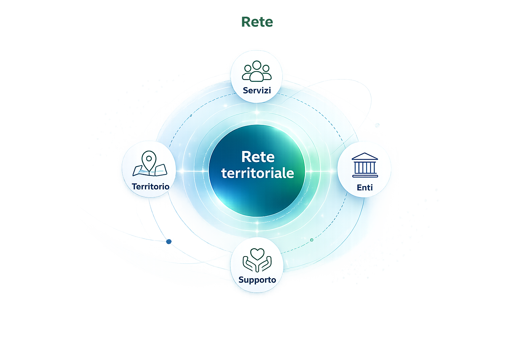

Disabilità: orientarsi tra diritti, tutele e possibilità concrete.
ANIeC affianca persone, famiglie e caregiver con un supporto informativo, umano e organizzato per comprendere percorsi, servizi e strumenti di tutela collegati alla disabilità.
Non solo pratiche: una questione di dignità, autonomia e vita quotidiana.
La disabilità non può essere ridotta a un modulo, a un verbale o a una percentuale. Ogni situazione richiede ascolto, ordine, comprensione dei bisogni e capacità di orientarsi tra strumenti diversi.
Un accompagnamento chiaro, senza sostituirsi agli enti competenti.
Il servizio nasce per aiutare la persona a non sentirsi sola davanti a informazioni frammentate, documenti difficili da ordinare e passaggi istituzionali spesso poco immediati.
Comprendere la situazione reale
Ogni percorso parte da un primo confronto riservato, utile a distinguere la richiesta formale dai bisogni concreti della persona, della famiglia o del caregiver.
Raccogliere documenti e informazioni essenziali
Verbali, certificazioni, comunicazioni, domande presentate e risposte ricevute vengono ricostruiti in modo più chiaro, così da evitare confusione e passaggi incompleti.
Capire quali strumenti possono essere utili
ANIeC offre una lettura divulgativa dei principali ambiti di tutela collegati alla disabilità, aiutando la persona a comprendere differenze, limiti e possibili canali da attivare.
Individuare gli interlocutori competenti
Quando la situazione richiede approfondimenti specifici, il supporto associativo aiuta a orientarsi verso enti, patronati, servizi territoriali, professionisti o soggetti abilitati.
Invalidità civile
Riconoscimento della riduzione della capacità lavorativa o delle difficoltà funzionali, con possibili benefici economici o assistenziali secondo requisiti previsti.
Legge 104/1992
Riferimento centrale per assistenza, integrazione sociale e diritti delle persone con disabilità e dei familiari che prestano assistenza.
Indennità di accompagnamento
Misura collegata a specifiche condizioni di non autosufficienza, valutata dagli enti competenti sulla base dei requisiti sanitari e amministrativi.
Inclusione scolastica, sociale e lavorativa
Supporti, percorsi e strumenti che mirano a favorire partecipazione, autonomia, accessibilità e pari opportunità nei contesti di vita.
Barriere architettoniche e accessibilità
Orientamento informativo su difficoltà di accesso, strumenti di segnalazione, agevolazioni e possibili percorsi di interlocuzione con enti o soggetti competenti.
Agevolazioni, benefici e servizi
Prima lettura delle possibili misure fiscali, assistenziali, sociali o territoriali collegate alla condizione riconosciuta e al contesto familiare.
Mettere ordine ai documenti aiuta a non perdere pezzi del percorso.
Un fascicolo personale ordinato permette di spiegare meglio la situazione agli enti competenti, ai patronati, ai professionisti e ai servizi territoriali eventualmente coinvolti.
Documenti che aiutano a ricostruire il percorso
Non si tratta solo di raccogliere carte, ma di mettere in ordine le informazioni essenziali per comprendere cosa è già stato fatto e cosa può essere utile verificare.
Informazioni che spiegano il bisogno reale
Accanto ai documenti formali è importante comprendere la vita quotidiana della persona, le difficoltà concrete e gli eventuali supporti già presenti.

Il bisogno non sempre si risolve in un solo ufficio.
Le situazioni legate alla disabilità possono coinvolgere più soggetti: servizi sociali, INPS, ASST/ATS, patronati, scuole, comuni, professionisti, enti del Terzo Settore e realtà associative. ANIeC APS può aiutare a orientare la persona verso il canale più adeguato, mantenendo chiari ruoli e competenze.
Un supporto pensato per situazioni diverse, spesso complesse.
Il bisogno di orientamento può nascere in momenti molto diversi: durante una richiesta di riconoscimento, nella gestione quotidiana della disabilità o quando famiglia e caregiver si trovano senza riferimenti chiari.
Orientarsi meglio significa affrontare il percorso con meno confusione e più consapevolezza.
ANIeC APS offre un primo spazio di ascolto, orientamento e organizzazione preliminare per aiutare persone, famiglie e caregiver a comprendere meglio documenti, bisogni, riferimenti territoriali e possibili strumenti di tutela.
Richiedi un orientamento iniziale